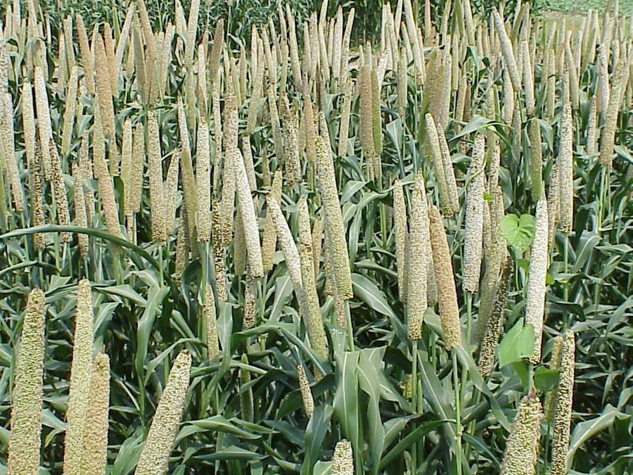

बाजराPearl Millet
Cenchrus americanus · Poaceae · FLR-0281

- Scientific name वैज्ञानिक नाम
- Cenchrus americanus (L.) Morrone
- Family कुल
- Poaceae
- Hindi हिंदी
- बाजरा
- Local names स्थानीय नाम
- bajra, bajara, pearl millet
- Status here यहाँ की स्थिति
- cultivated
- Movement आवागमन
- Resident, here all year
- Known from कहाँ दर्ज
- Others have published records from the Basti–Ayodhya districts बस्ती–अयोध्या के ज़िलों से दूसरों के प्रकाशित अभिलेख
- IUCN IUCN
- not evaluated
- Review समीक्षा
- audited and independently read
When to look कब देखें
Expected mainly in May, June, July, August, September, October. मुख्यतः मई, जून, जुलाई, अगस्त, सितंबर, अक्टूबर में अपेक्षित।
Uses and possibilities उपयोग और संभावनाएँ
Drawn from the documented uses in the profile below, where each is labelled traditional, current or a research lead. All uses →
Tell it apart from इनसे अलग पहचानें
बाजरा / Pearl Millet
Cenchrus americanus (L.) Morrone — Poaceae
बाजरा — एक महत्वपूर्ण ग्रीष्मकालीन अनाज फसल है जो भारत के शुष्क क्षेत्रों में लंबे समय से उगाई जाती है। यह एक छोटा, सीधे बढ़ने वाला घास (60–150 सेमी) है। पत्तियाँ संकीर्ण, लंबी होती हैं। शीर्ष पर एक बेलनाकार, घने, खुरदुरे दानों का स्पाइक होता है जो सुनहरे-पीले या काले रंग के होते हैं। दाने बहुत छोटे, मोती जैसे, कठोर होते हैं। बाजरे की दलिया, रोटी, खीर और खिचड़ी बनाई जाती है। इसे पशुओं के लिए हरे चारे के रूप में भी काटा जाता है। गर्मी और सूखे को सहन करने की क्षमता के लिए जाना जाता है।
Quick Identification त्वरित पहचान
| Feature | Description |
|---|---|
| Form | Erect, tufted annual grass, 60–150 cm tall, single or few culms |
| Leaves | Alternate, linear, 15–60 cm long, 0.5–1.5 cm wide, rough margins, gray-green |
| Inflorescence | Cylindrical, spike-like panicle, 7–30 cm long, 0.8–1.5 cm thick, very dense, bristly appearance |
| Spikelets | Surrounded by bristles (modified sterile branchlets); single fertile floret per spikelet |
| Grains | Pearl-like, 0.2–0.3 cm diameter, hard, variable color (golden, white, gray, black) |
Field tip: A compact, erect grass with narrow leaves and a dense, cylindrical, bristly grain spike; extremely drought-tolerant.
Morphology आकारिकी
| Feature | Measurement |
|---|---|
| Plant height | 60–150 cm |
| Leaf length | 15–60 cm |
| Leaf width | 0.5–1.5 cm |
| Spike length | 7–30 cm |
| Grain diameter | 0.2–0.3 cm |
Root system: Fibrous roots with adventitious roots; adapted to arid soils.
Culm: Solid, smooth, with distinct nodes; tillers from base in good growing conditions.
Associated Species / Interactions सहजीवी संबंध
- Bird seed: Ripe spikes are eaten by munias, finches, and house crows
- Insect host: Hosts various grain borers
- Fodder: Entire plant cut at pre-heading stage provides green fodder
- Rotation crop: Part of rainfed crop rotations
Life Cycle / Phenology जीवन चक्र
- Sowing: Sown in May–July immediately after early monsoon showers
- Germination: Emerges within 5–7 days with moisture
- Vegetative growth: Rapid growth through June–August; develops many leaves and tillers
- Flowering: Panicle emergence and flowering in August–September
- Grain filling: Grains mature through September
- Harvest: Mature spikes are harvested in September–October; threshed to yield grain
Pests and Diseases कीट और रोग
- Smut: Ustilago species cause grain transformation to black powder
- Downy mildew: Sclerospora graminicola causes systemic infection in seedlings
- Shoot fly: Atherigona species feeds on young plants
- Armyworms: Occasional defoliation in monsoon
Agricultural / Human Relevance कृषि प्रासंगिकता
Drought-resistant grain and fodder crop.
- Grain preparation: Grains are ground into fine flour for making roti, porridge, and traditional flatbreads
- Nutritional value: Rich in protein, fiber, and micronutrients; high in phosphorus and calcium
- Traditional dishes: Cooked whole grains are eaten as khichdi or rice-like preparations
- Snack: Roasted bajra grains are eaten as a crunchy snack
- Fodder value: Green plants provide excellent livestock feed; dry stover used as cattle bedding
- Cultivars: Sown varieties include Rajasthan Bajra-8, Mahyco, and local landraces
Traditional and Ethnobotanical Use
- Strength food: Traditional food for laborers and farmers; considered strength-building
- Festival food: Part of traditional festival preparations
- Drought crop: Extremely reliable in water-scarce years
Cultivation Calendar
| Stage | Month(s) |
|---|---|
| Sowing | May–July |
| Germination and growth | June–August |
| Flowering | August–September |
| Grain maturation | September |
| Harvest | September–October |
Expected Locally स्थानीय रूप से अपेक्षित
Not a field record. Written from published accounts for eastern Uttar Pradesh. No confirmed local sighting yet — if you have seen it, that is what the atlas needs.
अभी तक स्थानीय पुष्टि नहीं। यह विवरण प्रकाशित स्रोतों से है, किसी अवलोकन से नहीं।
Cenchrus americanus is expected as a monsoon cereal crop in Basti district. Look for it in fields from May through October, recognizable by compact dense grain spikes on erect grass plants. The first local record would be a photograph with date and location.
Distribution वितरण
Global range: Domesticated in Africa; now cultivated in dry regions worldwide.
In India: Grown widely in arid and semi-arid tracts; major producers include Rajasthan, Maharashtra, and Gujarat.
In Uttar Pradesh: Cultivated in plain districts during monsoon season, particularly in drier tracts.
In Basti district / eastern UP: Cultivated resident; grown by farmers in rainfed and irrigated systems.
Research Questions शोध प्रश्न
- How many grains does a single pearl millet spike contain, and does this vary by variety? / एक बाजरे के सिरे में कितने दाने होते हैं?
- Which growing conditions (spacing, rainfall, temperature) maximize grain yield in bajra?
- Can children thresh pearl millet spikes by hand without breaking the grains? — A traditional harvesting skills activity.
- How does the protein content of pearl millet grain compare with rice and wheat?
- Does early harvesting of green bajra for fodder reduce final grain yield? / हरे चारे के लिए कटाई से अनाज की पैदावार में कमी आती है क्या?
Similar Species मिलती-जुलती प्रजातियाँ
| Species | Key Difference | हिंदी | |
|---|---|---|---|
| Eleusine coracana ([[finger_millet\ | Finger Millet]]) | Much shorter; panicles are finger-like with 4–5 branches; grains are smaller | मंडुआ — छोटा, पाँचों उँगलियों जैसे |
| Setaria italica ([[foxtail_millet\ | Foxtail Millet]]) | Spike is looser and more nodding; bristles are not as dense | काकुन — ढीला स्पाइक |
| Sorghum bicolor ([[sorghum\ | Sorghum]]) | Much taller; larger grains; compact panicle | ज्वार — बहुत लंबा, बड़े दाने |
Field rule: A compact erect grass with a dense, cylindrical, bristly grain spike containing pearl-like tiny grains distinguishes pearl millet.
Taxonomy & Classification वर्गीकरण
Original description. Carl Linnaeus first described the species as Panicum americanum in 1753. It was later transferred to Cenchrus americanus by Vell. ex Morrone in 2010. The genus name Cenchrus is from the Greek kenchros. The specific epithet americanus refers to its African origin via Americas.
Subspecies. Monotypic; cultivated varieties are classified by grain color (golden, white, gray, black) and plant height (dwarf, tall).
Family and order placement. Order Poales, family Poaceae (grass family), tribe Cenchrinae.
Phylogenetic notes. Cenchrus americanus was domesticated in Africa from Cenchrus americanus subsp. americanus, a wild savanna grass.
IUCN status rationale. Not evaluated. As a globally cultivated crop, it faces no conservation threats.
Photo Gallery फोटो गैलरी
No photos yet — add field photos to media/species/pearl_millet/ and run node scripts/sync_photos.js.
References संदर्भ
- Morrone, O., Aagesen, L., Scataglini, M.A., Jacobs, S.W.L., Zuloaga, F.O. (2010). Phylogeny of the Cenchrus–Setaria clade. Systematic Botany 35(2): 322–341. [original description]
- Indian Council of Agricultural Research (2021). Handbook of Cereals and Pulses. ICAR, New Delhi.
- All India Coordinated Cereal Research Improvement Project (2020). Package of Practices for Pearl Millet. AICCRIP, Jodhpur.
- Rai, K.N., Singh, A.K. & Rao, A.S. (2018). Millets and Sorghum: Biology and Genetic Improvement. New India Publishing Agency, New Delhi.
- Botanical Survey of India (2015). State Flora Series: Flora of Uttar Pradesh. BSI, Kolkata.
- GBIF Occurrence Data — Cenchrus americanus, India (2024–2026).
Source file: species/flora/crops/pearl_millet.md